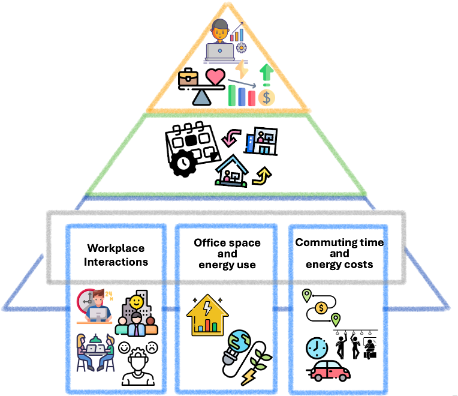

2024–2026 · EPFL ENAC Fribourg
OPT-USE: Hybrid work and urban performance
OPT-USE examines how flexible working policies reshape travel demand, workplace use, social interaction, and energy consumption.

Research question
Which combinations of office attendance and scheduling rules perform well for workers, employers, transport systems, and the urban environment?
Approach
The project combines revealed- and stated-preference data in a factorial survey design. Multi-objective analysis is then used to compare policies across transportation, spatial, social, and energy dimensions.
Contribution
My work links the estimation of scheduling preferences to policy design, allowing hybrid-work arrangements to be evaluated against several competing objectives rather than a single outcome.